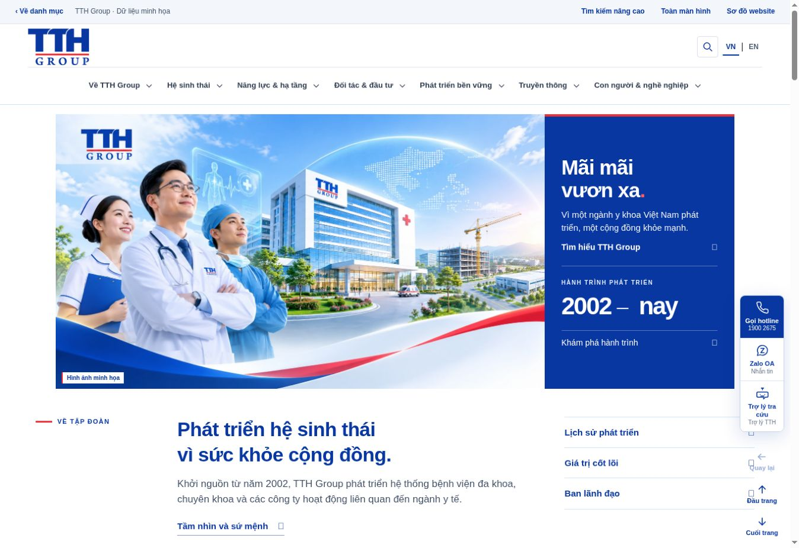

Trước hiệu chỉnh

Sau hiệu chỉnh

Ngày 28/11/2026. Nguồn tiếp quản: 9412d7ffaadd886a19deed520a914a05cd70a9b9. Giữ dự án, domain, kiến trúc thương hiệu và thiết kế đã duyệt.
Cập nhật sau rà soát production: phát hiện thêm lỗi thẻ chuyên khoa mở sai nội dung và hồ sơ bác sĩ dùng đích mẫu ở bản 6c85df8. Các số liệu bên dưới là kết quả lịch sử của lượt trước, chưa đủ để kết luận nghiệm thu toàn hệ thống. Đã bổ sung sửa danh tính và bộ kiểm thử; xem FOLLOWUP.md và biên nhận production mới nhất trong gói bàn giao.
| Phạm vi | Kết quả |
|---|---|
| Catalogue / Group / chuyên khoa / dưỡng lão | 1092 lượt trang/ngôn ngữ; 69548 thành phần tương tác; 0 đích thiếu |
| Healthcare và microsite | 230 lượt trang/ngôn ngữ; 14574 liên kết; 0 đích thiếu |
| Nghiệp vụ | 675 assertions thực hiện bằng trình duyệt; 0 không đạt |
| Bảo vệ thiết kế | 126 trang Healthcare và toàn bộ payload ảnh giữ nguyên; 70 script đã kiểm tra cú pháp. Hero desktop được đối chiếu ảnh trước–sau. |
Số thành phần trong kiểm kê không đồng nghĩa với số lượt click độc lập. Ma trận nghiệp vụ xác minh đích, đối tượng và các giá trị thực tế trong biểu mẫu; kiểm kê toàn trang xác minh sự tồn tại và ngữ cảnh của các đích được khai báo.
Hotline sai hành vi; mất ý định hợp tác; mất đối tượng khi reload/đổi ngôn ngữ; xung đột menu cha; thiếu hồ sơ dịch vụ Nguyên Tâm; CTA bác sĩ/microsite Healthcare; nút VI | EN gộp; fragment/điều khiển chưa kết nối; điều hướng hồ sơ kiến trúc. Chi tiết: BUGS.md và NAVIGATION_CONTRACT.md.
Đặt lịch và chương trình vẫn là biểu mẫu minh họa khi chưa kết nối HIS/CRM; không gửi hoặc xác nhận yêu cầu thật. Không tự gán hotline/OA chưa có dữ liệu. Nguồn Healthcare chưa có bản dịch EN đầy đủ cho mọi trang; điều hướng giữ ngữ cảnh và đánh dấu nội dung dịch chưa đầy đủ.
Trước hiệu chỉnh

Sau hiệu chỉnh
Ma_tran_kiem_thu.csv.gz chứa đủ chín trường yêu cầu. SUMMARY.json, build-gate.json, hero-comparison.json, scenarios.json, programmes.json và các báo cáo JSON nén là dữ liệu kiểm chứng. TAKEOVER.md mô tả cách khôi phục, build và chạy lại. Thông tin phát hành production được ghi trong hồ sơ sau deploy.